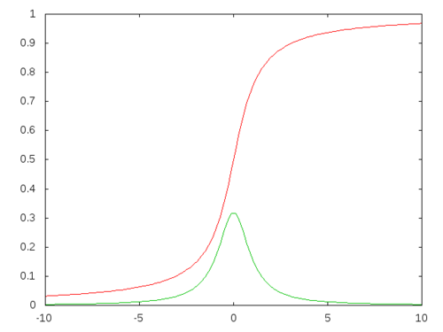

You need a collection of randomly generated points obeying a weird funky distribution and say your favorite language does not support what you need. How would you go about generating a bunch of points fitting into the distribution you need?
I will assume that your funky distribution is continuous and you have its probability density function \(f(x)\) which is of the form \(f\colon \mathbb{R}\to \[0,1\]\). From this we need to create cumulative distribution function \(F(x)\) using \[ F(x) = \int_{-\infty}^x f(t)dt \] One interesting thing about \(F(x)\) is that it is a non-decreasing function–after all its derivative is \(f(x)\) which is non-negative. If it happens that \(f(x)\>0\) for every \(x\) then \(F(x)\) becomes increasing which makes it invertible. This is crucial for our purposes. The inverse function of the cumulative distribution function \(F(x)\) is known as the quartile function and usually denoted by \(q(x)\).
The punchline is this: if \(x_1,\ldots,x_n\) is a collection of uniformly distributed random numbers in the interval \(\[0,1\]\) then \(q(x_1),\ldots,q(x_n)\) is a collection of random points obeying your funky distribution \(f(x)\).
Let me consider the logistic distribution \(f(x) = \frac{e^{-x}}{(1+e^{-x})^2}\) whose cumulative distribution function is the logistic function \(F(x) = \frac{1}{1+e^{-x}}\)
The corresponding quartile function is \[ q(x) = -\ln\left(\frac{1}{x}-1\right) \]
Let me implement this example in lisp:
(defun rlogistic (n)
(mapcar (lambda (x) (- (log (- (/ 1.0d0 x) 1.0d0))))
(loop repeat n collect (random 1.0d0))))
(rlogistic 20)
(0.5298456541903203d0 1.4603376713652383d0 -1.0775289157562622d0
1.5627801169043383d0 -1.0215871944697368d0 -1.4173250174419307d0
0.22898138757999306d0 -2.2685264832576038d0 2.3764562183479594d0
2.583270634601332d0 -0.7757976556550247d0 2.7727596538742056d0
2.3677328735264105d0 3.5022446835705177d0 0.4078009528377661d0
-0.9258251253274055d0 1.684671915269902d0 1.5960892904700303d0
0.34092549767282637d0 2.428634046653897d0)The arctangent function \(\arctan(x)\) looks like a cumulative distribution function, but it needs a little help.

It is also known as the standard Cauchy distribution, but for that one needs to transform the arctangent function to \(F(x) = \frac{1}{\pi}\arctan(x)+\frac{1}{2}\). Then its quartile function is \[ q(x) = \tan(\pi(x-½)) \]
Let me implement this in lisp as well:
(defun rcauchy (n)
(mapcar (lambda (x) (tan (* pi (- x 5.0d-1))))
(loop repeat n collect (random 1.0d0))))
(rcauchy 20)
(-0.6728178241045335d0 -4.3816447664507985d0 0.7182169549503769d0
2.2713336517222817d0 -0.48030938137460755d0 0.04867258459647225d0
-0.04317757748226266d0 1.2438239778244204d0 -0.6752213446978993d0
-0.5400852348135747d0 -0.2834133390847261d0 -4.932859222280014d0
0.17079522547651516d0 -3.3498087680276565d0 -1.4298686184346256d0
0.4973818749248839d0 -0.36123936498421555d0 0.44849100016138715d0
3.0923703098805753d0 -4.548038109047713d0)My last example is called Rayleigh distribution
\[ f(x,\sigma) = \frac{x}{\sigma^2} e^{-x^2/2\sigma^2} \] This distribution works on the half infinite interval \(\[0,\infty)\), and its cumulative distribution function is \[ F(x,\sigma) = 1 - e^{-x^2/2\sigma^2} \] whose quartile function would be \[ q(x,\sigma) = \sigma \sqrt{2\ln(1/(1-x))} \] whose implementation will look like
(defun rrayleigh (n)
(mapcar (lambda (x) (sqrt (* 2.0d0 (log (/ (- 1.0d0 x))))))
(loop repeat n collect (random 1.0d0))))
(rrayleigh 20)
(2.0491697768168065d0 1.6971676917167022d0 1.230629172235978d0
1.3360940539717456d0 0.9674690780386407d0 2.788813145388618d0
2.1061746807804793d0 0.8321009769689073d0 1.0416711663387623d0
1.1933751254466187d0 1.2673392219929287d0 0.943776637185836d0
0.8617988749612544d0 0.8869880239628769d0 0.7372963125026611d0
3.383064338683964d0 2.2447019432341575d0 1.511190782151179d0
0.6115151660011018d0 1.089518226812614d0)I took \(\sigma=1\) in the implementation. All one has to do is to multiply the generated numbers by \(\sigma\) to get the numbers one needs.